KNIFE SKILLS
Shopping for and Breaking Down a Whole Chicken, Step by Step
Considering the markup on prebutchered chicken, knowing how to quickly and efficiently break one down is a useful skill. At my supermarket, for the cost of a pound or so of boneless, skinless breast meat, you can buy an entire chicken, which comes with the same two breasts, plus two thighs, two legs, two wings, a carcass, and frequently a gizzard, liver, and heart thrown in as a bonus prize (I love chicken liver or heart sautéed in a bit of butter, but if you’re not into that, dogs love them as well).
When shopping for whole chickens, I prefer to buy air-chilled chicken, which was cooled after slaughter with cold air as opposed to a dunk in an ice bath. Water-chilled chicken absorbs liquid into its meat, which then comes out during cooking and makes stir-frying or roasting difficult. It’s also more slippery to the touch and can leave messy pools of pink juices on your cutting board. Air-chilled chicken is a little pricier, but it’s worth it in my opinion. Chicken that is air-chilled will invariably be marked as such. If the labeling doesn’t indicate one way or another, it’s a good bet the chicken was water-chilled.
As for free range, organic, and the like, much of that comes down to the environmental impact and humane standards more than it does flavor, but typically the better-raised the chicken, the better the flavor, and the better it is for the environment (and, unfortunately, the pricier). Go with the highest quality of life that your budget allows. (See my book The Food Lab for a more detailed guide to chicken labeling.)
There are many ways to break down a chicken, but usually I’ll remove the wings for making stock or frying, take the breasts off the bone to use in stir-fries (or leave them on the bone for poaching), and remove the legs to use in soups and stocks (or bone out the thigh and cut it up for stir-fries). You’ll need a sharp chef’s knife or cleaver, a heavy knife or cleaver you don’t mind banging up a little (you’ll be cutting through small chicken bones), and a nice big cutting board for the process.
Here’s how:
Step 1 • Spread the Legs
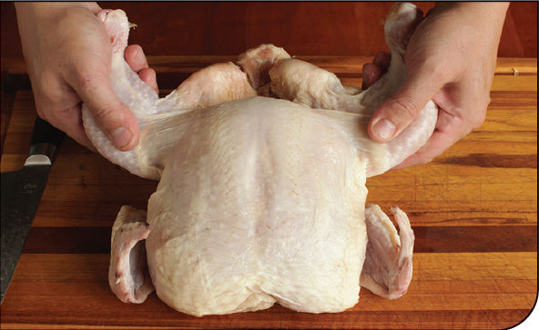
With the chicken on its back, grab the chicken by the drumstick and pull the leg out from the body until the skin is stretched taut.
Step 2 • Cut through the Skin
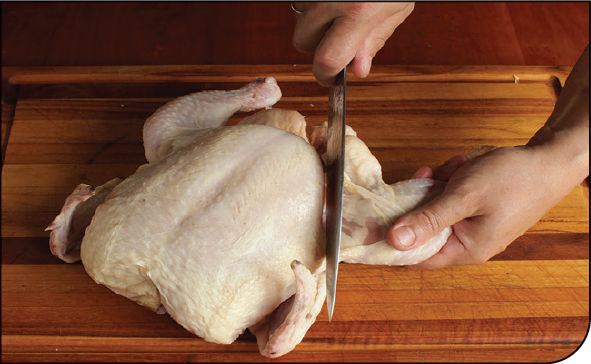
Start the operation by cutting through the skin between the leg and the body. Don’t cut too deep—just through the skin. No matter what Cat Stevens says, the first cut should be the shallowest. Repeat this cut on the other side.
Step 3 • Pop Out the Joint
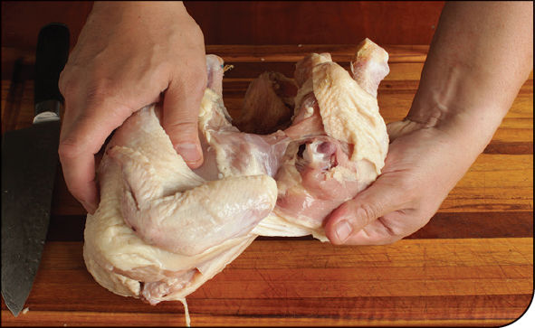
Grab both legs and fold them downward, using the two legs as a sort of lever that lifts the carcass of the chicken up toward you. Keep going until you see the ball joint from each leg pop out of its socket. This will require only minimal force.
Step 4 • Cut Off the Legs
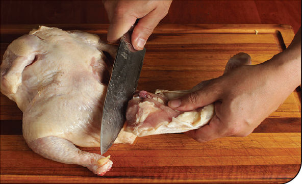
Slip the blade of your knife into the joint you just exposed and cut away the leg. Try to push your knife blade as close to the chicken’s backbone and hips as possible, following the contour of the bones to get the little nugget of dark meat that rests in there (this is called the oyster). If you don’t get it, no worries; once you simmer the carcass for stock you can pull out the cooked oyster with your fingers. Repeat this process on the other leg.
Step 5 • Remove the Wings
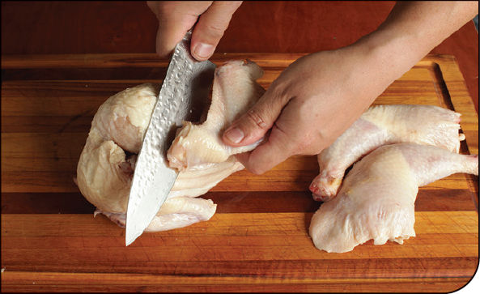
With the chicken resting on its side, pull on its wing to stretch it out. This should allow you to estimate where the bone inside the drumette attaches to the carcass. Use the heel of your knife to cut through the breast from the side, aiming for that joint socket. (Once you get there, wiggle your knife to get through it and remove the wing. If you feel like your knife is hitting solid bone rather than getting through the ligaments around the joint, reposition and try again.) Repeat with the other wing.
At this point you can either remove the breast meat from the carcass for slicing or cubing for use in stir-fries (see below) or leave it on the carcass and further split the chicken for bone-in breast pieces for poaching or simmering.
HOW TO REMOVE CHICKEN BREAST MEAT FOR STIR-FRIES
Step 1 • Cut Along the Sternum
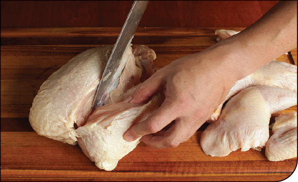
Cut along one side of the chicken’s breastbone (sternum), using the tip of your knife and keeping it pressed against the bone as much as possible.
Step 2 • Free the Breast
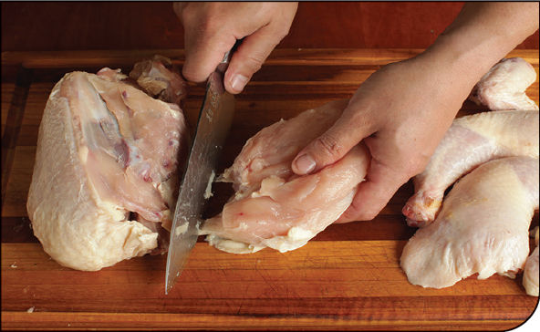
Continue cutting along the chicken’s sternum and rib cage, peeling the breast meat back with your free hand as you go to expose the carcass until the boneless breast is completely freed from the chicken carcass. Repeat on the other side.
Step 3 • Chop the Carcass
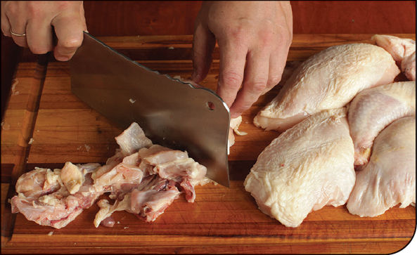
Use a heavy chef’s knife or cleaver (one you don’t mind beating up a little) to hack the carcass into smaller pieces for more efficient stock making. You can also peel the skin off the chicken breast pieces and add them to the stock ingredients for more body.
HOW TO SPLIT A WHOLE BONE-IN CHICKEN BREAST FOR POACHING OR SIMMERING
KNIFE SKILLS
Step 1 • Split the Back
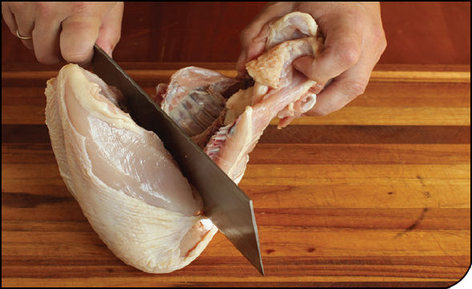
Hold the chicken by the back and position it vertically on your cutting board, with the butt end pointing up. Use your knife to cut through the skin and cartilage between the breast and the back until you get through the first or second rib. Switch over to your cleaver or a knife you don’t mind beating up a little and continue cutting through the ribs, using short, firm strokes. Alternatively, use poultry shears to cut through the ribs on both sides. The backbone should now be completely separated from the whole breast. Hack it into smaller pieces and save it for stock.
Step 2 • Split the Breasts
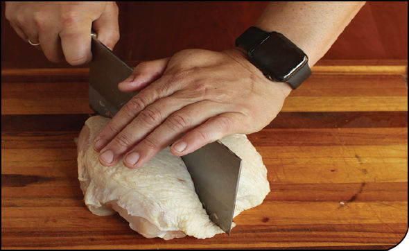
To split the breast, cut through the center of the breastbone with firm, downward pressure until your knife cracks through the bone and splits the breast in half. These breast halves are now ready for poaching or simmering.
HOW TO CUT BONELESS CHICKEN BREAST FOR STIR-FRIES
Depending on the dish, chicken breast meat can be thinly sliced, cut into cubes, or cut into thin slivers. Here’s how to do it. Start by carefully patting the chicken dry, then placing it on a plate and putting it in the freezer for 15 minutes.
Step 1 • Identify the Grain
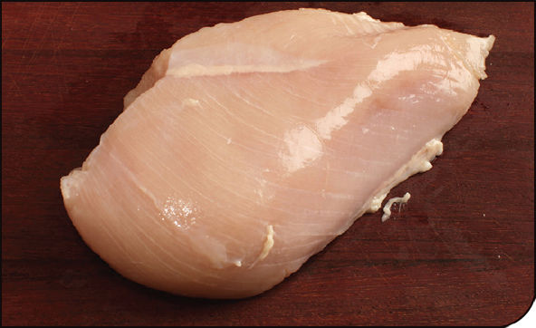
All muscle matter has a grain to it. The muscle fibers align in the direction that they contract. The orientation of your knife to this grain will determine the length of the muscle fibers in an individual slice of meat, which in turn will have a profound effect on how tender or tough that meat is. (See “The Trigonometry of Slicing Against the Grain,” here.)
A chicken breast consists of two sets of muscle grains—one large, one small—whose angles mirror each other across a seam in the center.
Step 2 • Cut the Chicken
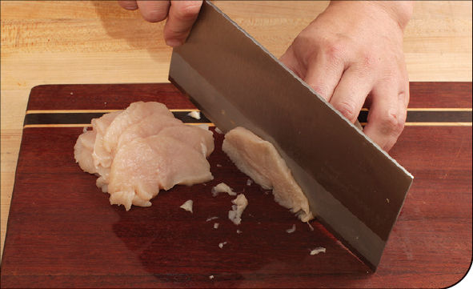
For slices: When slicing chicken for stir-fries, set your knife perpendicular to this seam so that the knife ends up cutting at around a 45-degree angle to both muscle grains.
Hold the chicken breast with your nonknife hand, curling your fingertips under your knuckles (so you don’t slice them off!), and slice the chicken with long, even strokes into slices about ¼ inch thick.
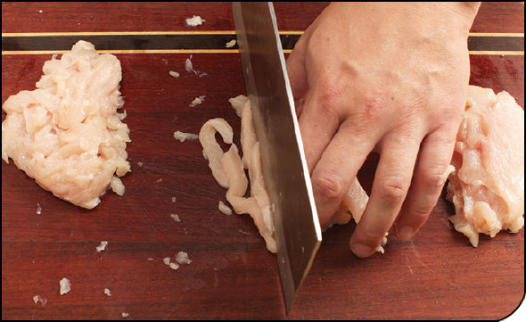
For slivers: Take those slices, stack a few at a time, and slice them lengthwise into matchsticks.
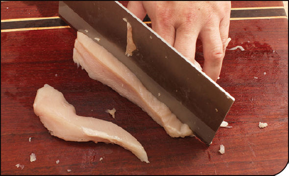
For dice: Start by slicing the chicken breast lengthwise into strips. The width of these strips should be the same as the dimensions of your final dice (i.e., for ½-inch dice, start by cutting the chicken into ½-inch strips).
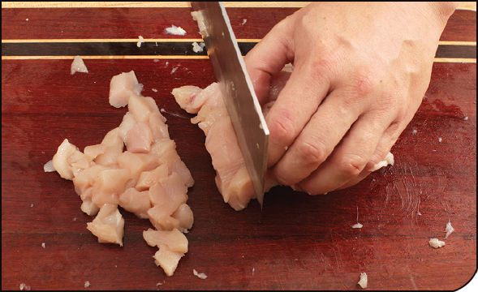
Next, cut each strip crosswise into dice.
NOTE: Chicken breasts are about ½ inch thick to start, so for fine, ¼-inch dice for recipes such as san choi bao (lettuce cups with hoisin and pine nuts), you’ll need to start by cutting ¼-inch strips, turning each of those strips onto their wide side, then further splitting each one in half, yielding ¼-by-¼-inch strips that can then be cross-cut into ¼-inch dice.
HOW TO BONE OUT A CHICKEN THIGH FOR STIR-FRIES
Step 1 • Locate the Joint
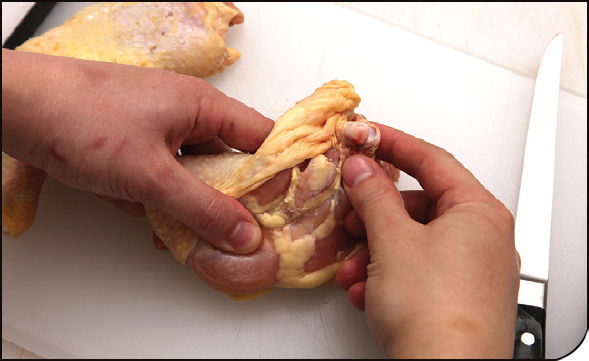
If you’re starting with whole chicken legs, you’ll have to remove the drumstick from the thigh. Place your thumb over the joint and move the thigh bone back and forth with your other hand to find the articulation point. This is where you’ll cut.
Step 2 • Divide the Leg
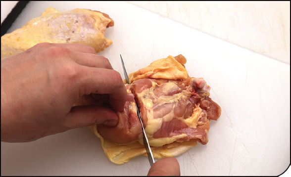
Insert a sharp boning or paring knife into the joint. It should slide right through. If there is resistance, move the blade around until you find the space between the joints. Set aside the drumstick for another use (such as simmering for stock or in place of wings in Extra-Crispy Korean Fried Chicken, here). Peel the skin off the chicken thigh using your hands and trim off any excessive bits of opaque yellow or white fat (a little is OK; just clean up the edges).
Step 3 • Find the Bone and Make the First Incision
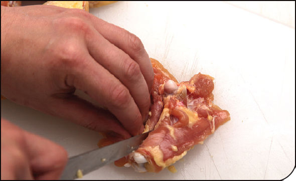
Flip over the thigh so that the rough side is up and locate the single bone that runs through it. Your goal is to remove this bone with minimal damage to the meat. Keeping the fingers of your nonknife hand curled for protection (raw chicken can be slippery) and using the tip of the knife, score a line through the meat along the length of the bone.
Step 4 • Expose Bone
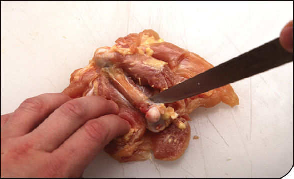
Expose the top of the bone by using the tip of your knife in short, flicking motions, making sure to keep your fingers well away from the blade. A clean paper towel can help you get a better grip.
Step 5 • Scrape the Bone
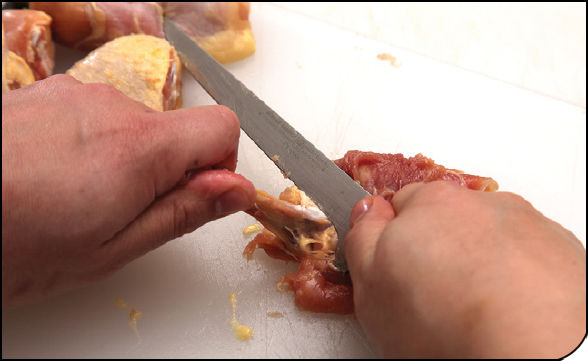
Grasp one end of the bone with your nonknife hand (a little piece of paper towel can help if it’s very slippery), then, using the base of your knife, scrape the meat off of the bone in short, firm flicks. A boning knife should have a curved bolster designed for this task. If using a paring knife, chef’s knife, or cleaver, just use the section of the knife closest to the handle.
Step 6 • Separate Meat from Bone
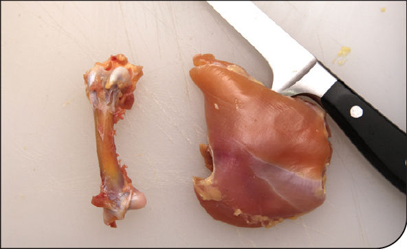
When the meat has been mostly scraped off the bone, separate the end of the bone completely from the meat. Trim away any gristle or bits of bone or cartilage that may have remained on the meat. Save the bones for stock and use the meat for recipes as desired.
HOW TO CUT CHICKEN THIGHS FOR STIR-FRIES
Chicken thighs, with their uneven musculature and ample connective tissue and fat, fare better diced than sliced or slivered. It’s easiest to start with boneless, skinless chicken thighs, but you can also start with whole thighs and debone them yourself
Step 1 • Trim Fat
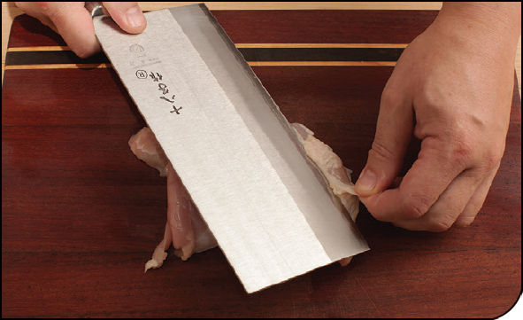
Trim off any large deposits of excess fat with your knife and discard.
Step 2 • Cut Strips
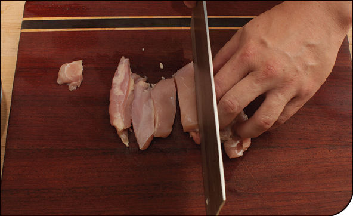
Cut both halves of the chicken thighs lengthwise into ½-inch strips.
Step 3 • Cut Dice
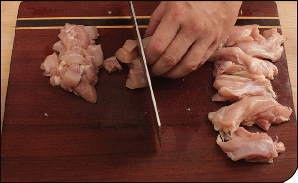
Rotate the strips 90 degrees and cut them crosswise into ½-inch dice.
The Trigonometry of Slicing against the Grain
It’s all well and good to say that slicing against the grain leads to shorter muscle fibers, but how much difference does it actually make? Let’s turn to a bit of eighth-grade trigonometry to find out.
Some definitions
 First, let’s define the angle between the knife blade and the meat fibers as θ.
First, let’s define the angle between the knife blade and the meat fibers as θ.
Now, let’s call the distance you move your knife between slices (i.e., the width of each slice) w.
With these two definitions, let’s set up an equation to calculate the length of the muscle fibers in the resulting slices, m.
With these definitions, we arrive at the equation w/sin(θ)=m.
So if our goal is to minimize the length of muscle fibers, we can achieve that either by minimizing w (i.e., making thinner slices) or by maximizing sin(θ) (i.e., cutting perfectly perpendicular to the grain).
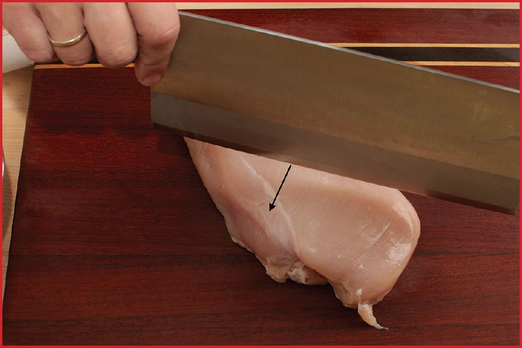
How much does that angle really make a difference? When the knife is held perpendicular to the direction of the meat fibers, sin(θ) is equal to 1 and the meat fibers are exactly as long as the slice is wide. If our knife strokes are ½ inch apart from each other, then the muscle fibers end up ½ inch long. This is as short as we can get them for a given cut width.
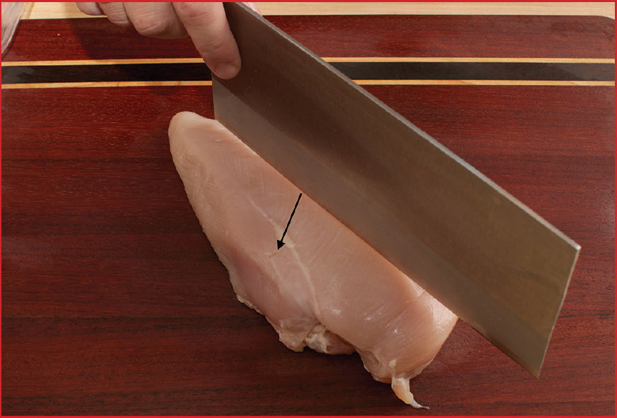
If, on the other hand, we cut with the knife held at a 45-degree angle to the meat fibers, while the width of the slice is still ½ inch, the length of the muscle fibers has reached a little over 7⁄₁₀ inch (that’s .5½), an increase of over 40%!
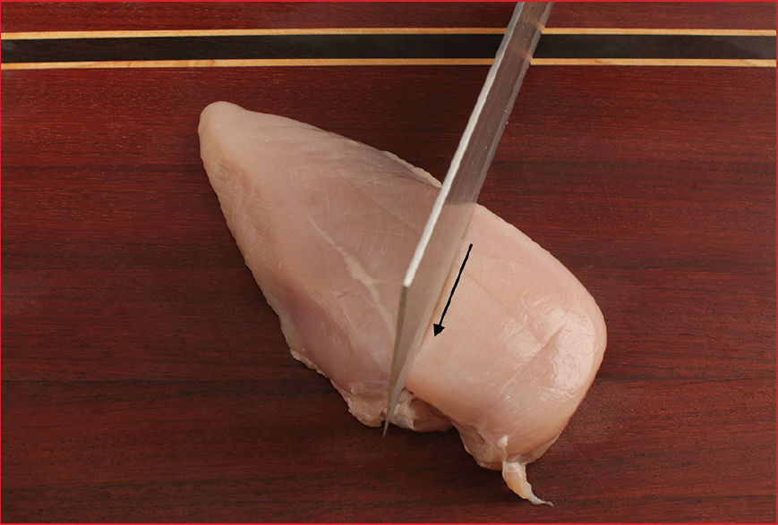
So what if we take it to the extreme: as the angle of the blade approaches the angle of the muscle fibers, sin(θ) will approach 0, while m will approach infinity. Thus, according to the unbreakable laws of mathematics, your meat fibers would stretch all the way out to the edges of the universe. Now that’s a big, tough chicken!